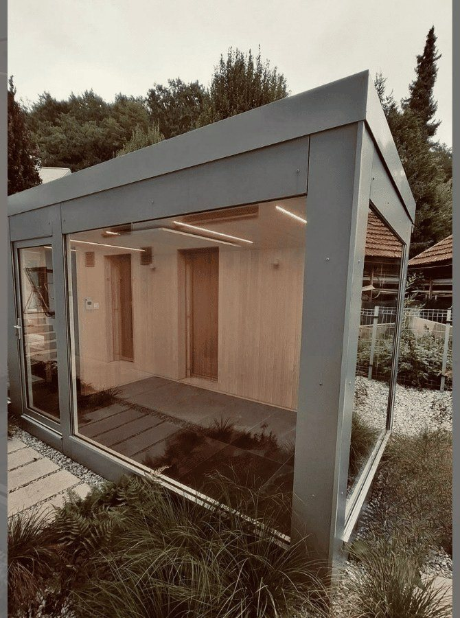
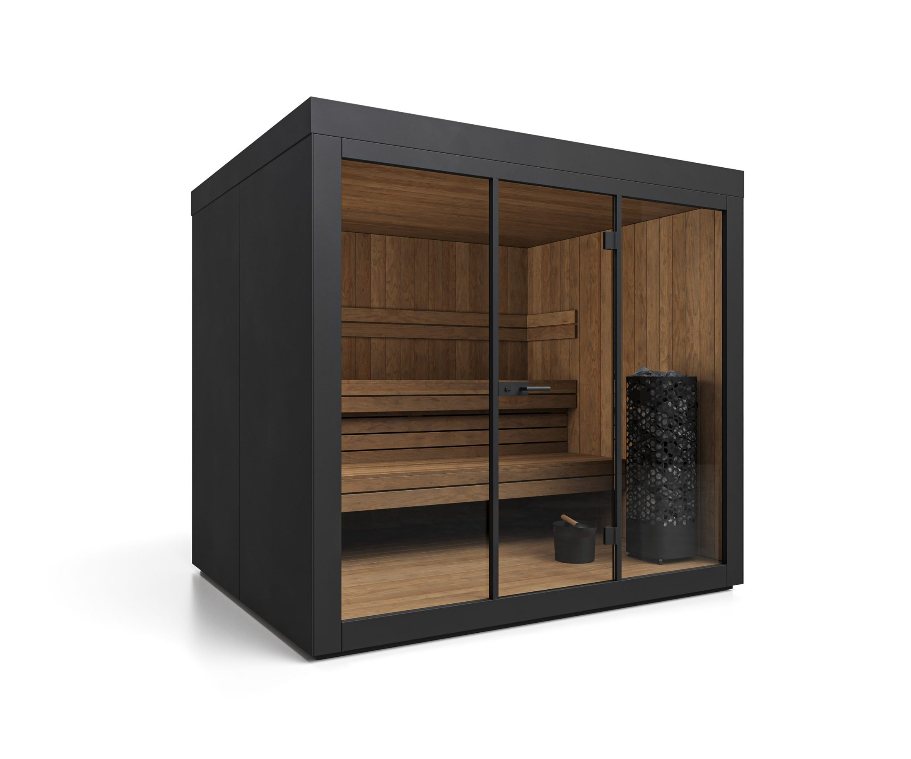
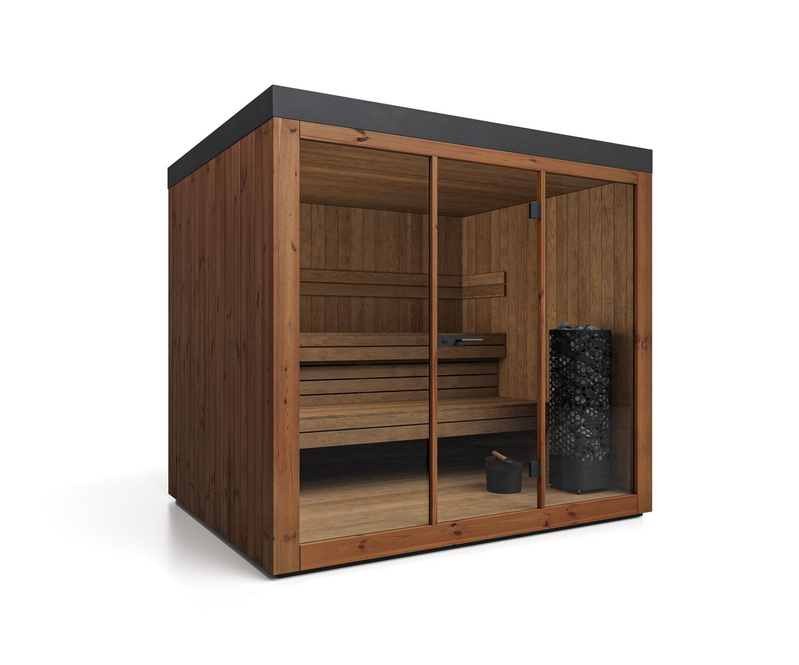

Ustvarite okolje, v katerem se boste vsak dan počutili kot prerojeni. Štirje modeli za vrt, teraso ali streho.


Sodobna zunanja savna čistih linij, v treh izvedbah lesa.

Topel lesen videz, ki se zlije z vrtom.
Na voljo v enakih treh izvedbah kot Alta in Pinus.
Zunanjo savno lahko izvedemo tudi kot hibridno, s finsko pečjo in infrardečimi grelci.
Savna hiška za pravi wellness na domačem vrtu.